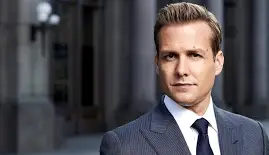

Harvey Specter, one of the central characters in *Suits*, is a brilliant and charismatic lawyer known for his sharp legal mind and fearless approach to cases. Throughout the series, Harvey handles many high-stakes cases, showing his ability to win difficult battles in and out of the courtroom. Here are some of Harvey's top cases from the series:
### 1. **The Ava Hessington Case**
- **Overview**: One of the most iconic cases in *Suits*, the Ava Hessington case involves Harvey defending Ava Hessington, a CEO accused of bribing foreign officials to secure oil contracts. The case is a high-profile one, and Harvey's ability to strategically navigate through a complex international issue is put to the test.
- **Outcome**: Harvey eventually wins the case by outmaneuvering the opposition and turning the tables in a dramatic fashion, saving Ava from jail and securing a major victory for the firm. This case showcases Harvey's talent for strategic thinking, negotiation, and pressure handling.
### 2. **The Liberty Rail Case**
- **Overview**: In this early case from Season 1, Harvey represents a major train company (Liberty Rail) after a train derailment causes the death of several passengers. The case is important for Pearson Hardman (the firm at the time), and Harvey must use his legal expertise to get the best outcome for his client.
- **Outcome**: Harvey not only wins the case but also secures a settlement that favors his client, demonstrating his ability to find creative solutions even in high-pressure situations.
### 3. **The Mike Ross Fraud Case**
- **Overview**: Harvey's loyalty to Mike Ross, who has been practicing law without a degree, is tested in the latter seasons. Harvey has to navigate Mike's legal troubles after his secret is exposed, and there are several moments where Harvey must pull strings to protect Mike from criminal charges.
- **Outcome**: Harvey’s commitment to Mike is evident as he goes to extreme lengths to protect him from the consequences of practicing law fraudulently. While Harvey does not win the legal battle, his efforts are crucial in keeping Mike safe and ensuring the firm’s survival.
### 4. **The Pearson Specter Merger Battle**
- **Overview**: In the midst of a merger with another law firm, Harvey faces intense pressure as he fights to maintain his position and that of his colleagues. This case is less about a traditional courtroom battle and more about the internal politics and corporate strategy within Pearson Specter.
- **Outcome**: Harvey uses his charm, sharp legal tactics, and influence to navigate the complexities of the merger. He ensures that he and Jessica Pearson come out on top, and they successfully avoid being forced out of the firm.
### 5. **The Darby vs. Pearson Specter Case**
- **Overview**: In this case, Harvey represents the firm in a legal battle against a major corporate adversary, Edward Darby. The case involves high-stakes negotiations, as Darby tries to take control of the firm.
- **Outcome**: Harvey’s tactics, including bringing in a key witness and making bold moves in the courtroom, lead to a favorable outcome for Pearson Specter. This case highlights Harvey's skills in litigation, persuasion, and his ability to fight for the firm’s survival.
### 6. **The Jessica Pearson vs. Harvey Specter Case**
- **Overview**: In the earlier seasons, Harvey is involved in a legal conflict with his own firm’s managing partner, Jessica Pearson, during power struggles. Harvey must face the challenge of aligning his professional ambitions with the needs of the firm, sometimes even against Jessica herself.
- **Outcome**: Despite their tension, Harvey and Jessica usually work through their differences, with Harvey proving his ability to win cases and maintain his position as one of the top lawyers at the firm. This battle is more about legal strategy, business negotiation, and internal politics than a typical courtroom case.
### 7. **The Trial Against Sean Cahill (The SEC Case)**
- **Overview**: Harvey faces off against Sean Cahill, a tough SEC agent, during a high-profile investigation involving Pearson Specter. This case involves the firm potentially being accused of criminal activities, and Harvey needs to defend the integrity of the firm while navigating legal and political threats.
- **Outcome**: Harvey uses his negotiation skills and deep understanding of the law to defend Pearson Specter and come out on top, ensuring the firm’s legal and financial standing remains intact.
### 8. **The Case Against Travis Tanner**
- **Overview**: Travis Tanner, an arrogant and persistent attorney who often comes up against Harvey, becomes a recurring antagonist. In several seasons, Harvey and Tanner have tense legal battles, with Tanner trying to bring Harvey down using underhanded tactics.
- **Outcome**: Harvey ultimately wins in multiple confrontations with Tanner, using both his legal knowledge and personal tenacity to expose Tanner's weaknesses. The final showdown between Harvey and Tanner is one of the most satisfying moments in the series.
### 9. **The Donna Paulsen Case (Personal Loyalty)**
- **Overview**: While not strictly a legal case, Harvey's loyalty and protection of Donna Paulsen, his secretary and close friend, is a recurring theme throughout the show. Harvey goes to great lengths to defend Donna from legal threats, including during a lawsuit where Donna is at risk of being implicated in a criminal conspiracy.
- **Outcome**: Harvey’s personal loyalty to Donna plays a critical role in both her career and his own, and while it's not a "case" in the traditional sense, the emotional stakes are high, and Harvey’s unwavering support is vital to her eventual success.
### 10. **The End of the Pearson Specter Firm**
- **Overview**: In the later seasons, Harvey faces the collapse of Pearson Specter as the firm goes through significant restructuring, which tests his leadership. Harvey's legal and business expertise are crucial in navigating these changes and securing the future of the firm, even as it goes through a major transformation.
- **Outcome**: Harvey remains a key figure throughout this period, fighting to maintain his position and that of the firm while dealing with personal and professional challenges.
Harvey Specter’s character is built on his ability to win seemingly impossible cases, but also on his loyalty to those close to him. His journey is filled with both personal and professional challenges, and his cases often go beyond the courtroom, involving politics, loyalty, and business strategy.